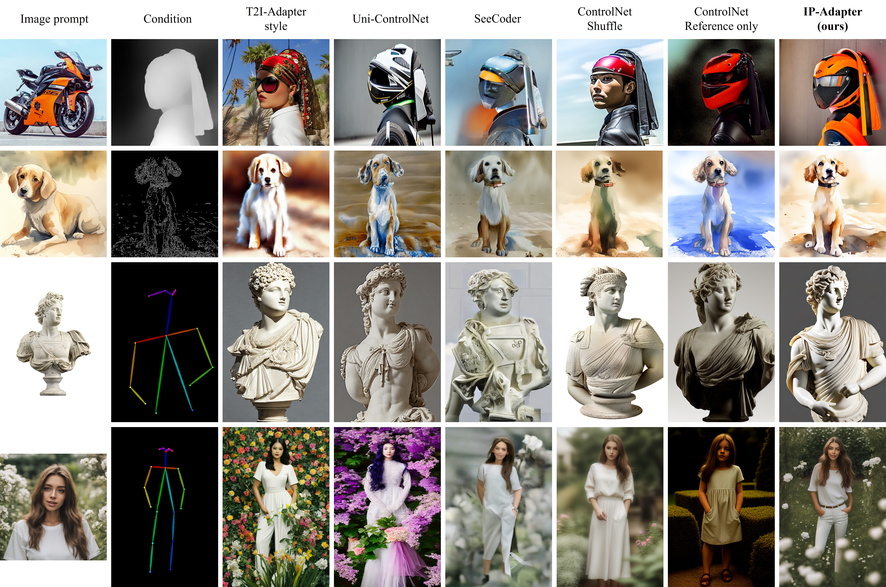

Comparison with Existing Methods
The comparison of our proposed IP-Adapter with other methods conditioned on different kinds and styles of images.

Recent years have witnessed the strong power of large text-to-image diffusion models for the impressive generative capability to create high-fidelity images. But, it is very tricky to generate desired images using only text prompt as it often involves complex prompt engineering. An alternative to text prompt is image prompt, as the saying goes: "an image is worth a thousand words". Although existing methods of direct fine-tuning from pretrained models are effective, they require large computing resources and are not compatible with other base models, text prompt, and structural controls. In this paper, we present IP-Adapter, an effective and lightweight adapter to achieve image prompt capability for the pretrained text-to-image diffusion models. The key design of our IP-Adapter is decoupled cross-attention mechanism that separates cross-attention layers for text features and image features. Despite the simplicity of our method, an IP-Adapter with only 22M parameters can achieve comparable or even better performance to a fine-tuned image prompt model. As we freeze the pretrained duffusion model, the proposed IP-Adapter can be generalized not only to other custom models fine-tuned from the same base model, but also to controllable generation using existing controllable tools. With the benefit of the decoupled cross-attention strategy, the image prompt can also work well with the text prompt to accomplish multimodal image generation.
The image prompt adapter is designed to enable a pretrained text-to-image diffusion model to generate images with image prompt. The proposed IP-Adapter consists of two parts: a image encoder to extract image features from image prompt, and adapted modules with decoupled cross-attention to embed image features into the pretrained text-to-image diffusion model.
The comparison of our proposed IP-Adapter with other methods conditioned on different kinds and styles of images.
Generalizable to Custom Models
Once the IP-Adapter is trained, it can be directly reusable on custom models fine-tuned from the same base model.
Structure Control
The IP-Adapter is fully compatible with existing controllable tools, e.g., ControlNet and T2I-Adapter.
Our method not only outperforms other methods in terms of image quality, but also produces images that better align with the reference image.

Image-to-Image and Inpainting
Image-guided image-to-image and inpainting can be also achieved by simply replacing text prompt with image prompt.
Multimodal Prompt
Due to the decoupled cross-attention strategy, image prompt can work together with text prompt to realize multimodal image generation.
Compared with other existing methods, our method can generate superior results in both image quality and alignment with multimodal prompts.

@article{ye2023ip-adapter,
title={IP-Adapter: Text Compatible Image Prompt Adapter for Text-to-Image Diffusion Models},
author={Ye, Hu and Zhang, Jun and Liu, Sibo and Han, Xiao and Yang, Wei},
booktitle={arXiv preprint arxiv:2308.06721},
year={2023}
}